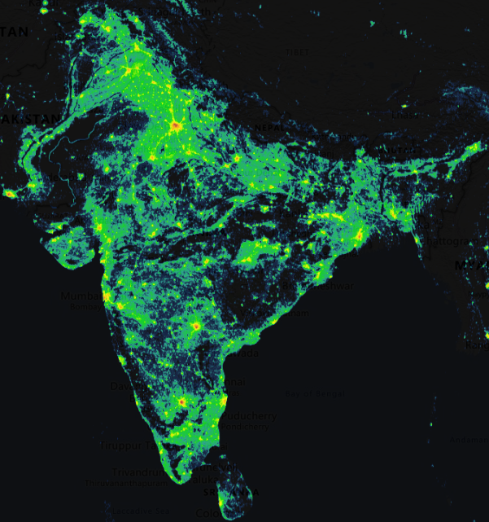
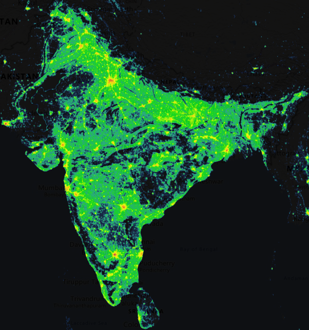

India opened its doors to international trade and investments in the early 1990s, the subsequent economic growth and industrial development brought both opportunities and challenges for the environment. Increased industrialization, urbanization and consumerism led to hightened demands on natural resources and energy resulting in environmental degradation and pollution.
Globalisation and Environment: what a story!
-
Early 1990s
Globalization started in India. Globalization is a term used to describe how trade and technology have made the world into a more connected and interdependent place.
-
By 2000s
Transboundary pollution began: pollution generated in one country impacting the other countries. It is caused usually while transportation of goods and resources.
Technology
Access to global markets spurred innovation, attracting foreign investments that fueled the growth of the tech industry in India. Mobile phones had exponential growth.
e-Waste
Mobile phones contribute significantly to e-waste production: about 12% of the 1.85 million tons of e-waste produced in India comes from mobile phones alone.
Graph showing the effects of increased use of technologies.
Due to India being a major manufacturing center for many technology companies, the e-waste generated is in metric tons. e-waste is generated from various devices like laptops, speakers, etc. This inturn releases high concentrations of carbon emissions.
Carbon Emissions
Mobile phones and other electronics use many toxic elements and release toxins into the air during manufacturing.
Mobile Recycling
The precious elements in mobile phones have been recycled into olympic medals.
MNCs
Multinational companies boost the economy of a country by investing in infrastructure, technology, and innovation. Their presence often leads to increased production, exports, and overall economic growth, contributing to the country's prosperity and development.
Labour Injustice
MNCs set up their offices and factories in those regions where they get cheap labour and other resources. Local firms struggles to compete. The laws of indian government don't work in MNCs and so the workers have to work a lot more hours and get paid less.
The chart shows how the growth of MNCs in India has led to increased foreign investments in India. This, in turn, led to increased foreign exchange reserves. The green bars show the amount of foreign investment per year in US$ Bn while the red bars show the increase in number of MNCs per year. It is estimated that there are about 5 Lakh MNcs currently in India.
Cooperative Efforts
With the technology influx due to globalization, many energy-efficient inventions like LEDs are now replacing the traditional power sources. Countries share knowledge and technologies related to renewable energy, accelerating their development and adoption.
Graph showing growth of MNCs in India.
Source:
Ernst & Young
Livemint
Power Consumption
The rapid industrialization and urbanization increase the demand for electricity, and energy which lead to resource depletion, and pollution which contribute to global warming and climate change. The rising temperatures in India due to global warming have increased the demand for cooling appliances, putting pressure on the power grid.
Power generation has become a major hurdle in India's progress on the path of technologies. India is largely dependent on fossil fuels although it is slowly inching towards renewable sources such as wind and solar energy farks. Despite using 70% of domestically produced coal, the power sector faces shortages.
Self sufficiency
India is slowly catching up with consumption. Some states, such as Telangana, have now attained self-sufficieny.
Graph showing Power statistics in India.
Power Ministry, Govt. of India
Light Pollution
Due to the increase in international and IT jobs, a lot of people have started working in the night. There are a lot more jobs.
Extinction of nocturnal species
Many biological processes like pollination, migration, breeding, nesting and hatching depend on darkness. Because of the increased light pollution, nocturnal species are disappearing. For example: artificial light near beaches have reduced turtle hatchlings over time as adult female turtles seek dark zones for egg-laying. eggs.
Light pollution means exsessive use of artificial light sources that have adverse effect on the environment, lifestyle, wildlife and astronomy. Bortle scale, which measures night darkness, starts at 4 or 5 in most states. Bortle scale between 1 and 2 is very dark, clear skies. This is found only in a handful of regions in india. Many cities are at 8 or 9 which is terrible.
Sky Pollution Map 2022
Map on the right below shows night lighting in India in 2022. Most urban areas are saturated with bright lights showing the highly increased light pollution since 2012.
Sky Pollution Map 2012
Map on the left below shows night lighting in India in 2012. Except for the metropolitan and urban areas, there was relatively less light in other areas.


CONCLUSION:
The
intensification of global interactions raises the heat on
environmental issues, such as resource depletion, pollution,
and climate change. However, just as rising temperatures
prompt innovative solutions, globalization can foster
international cooperation, knowledge exchange, and
technological advancements, offering a path towards
sustainable practices. Like mitigating the impact of rising
temperatures requires concerted efforts, addressing the
environmental challenges of globalization demands
collaborative, eco-conscious policies and practices to ensure
a balanced and sustainable future.
Join this discussion by adding your insights.
You can add your email Id below to get monthly updates.
Can't wait to read your perspectives on Globalization and Environment.Drop Box